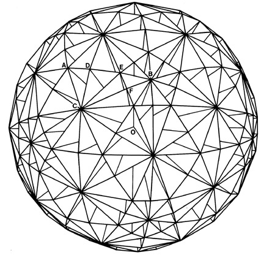

|  |
| Fig. 986.471 Modular Subdivisioning of Icosahedron as Maximum Limit Case: The 120 outer surface right spherical triangles of the icosahedron's 6, 10, and 15 great circles generate a total of 242 external vertexes, 480 external triangles, and 480 internal face-congruent tetrahedra, constituting the maximum limit of regular spherical system surface omnitriangular self-subdivisioning into centrally collected tetrahedral components. |